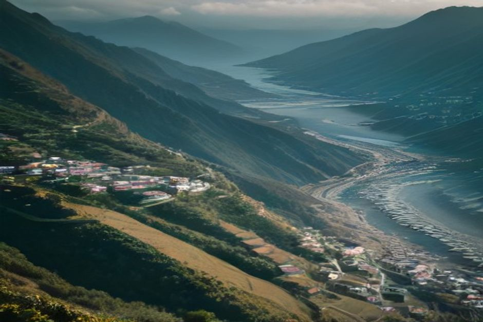
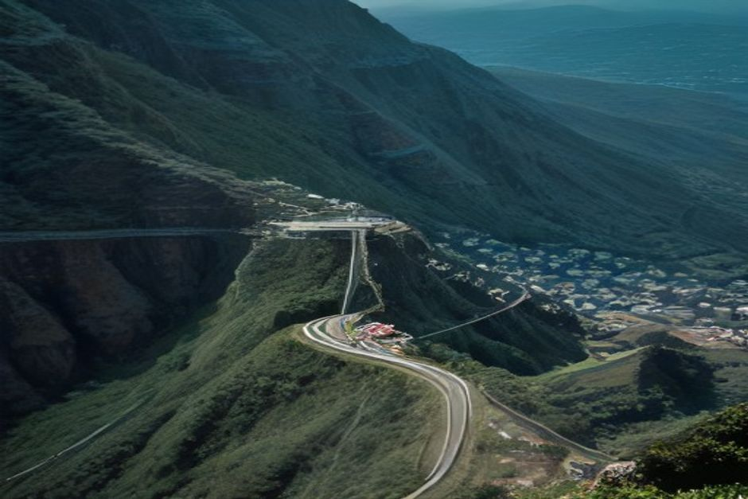

Quem faz a costa norte da Madeira em direção a Porto Moniz costuma passar por Santana sem parar. É pena. A Rocha do Navio é um teleférico que desce a falésia até uma fajã à beira-mar, dentro de uma reserva natural marinha, e demora menos de uma hora a incluir no caminho.
Reserva natural da Rocha do Navio: o que é, afinal
Em duas linhas: um teleférico pequeno, no concelho de Santana, que liga o topo da falésia a uma fajã ao nível do mar. Uma fajã, como bem sabe quem é daqui, é aquele terraço plano formado junto ao mar, onde em tempos se cultivavam pequenas courelas só acessíveis a pé.
O nome vem de um navio holandês que naufragou ali no século XIX. A reserva foi criada em 1997 e protege o fundo do mar e dois ilhéus ao largo, a Rocha das Vinhas e a Viúva. É uma das poucas áreas protegidas da Madeira que são exclusivamente marinhas.

Teleférico da Rocha do Navio: horário, preço e duração
A descida dura cerca de cinco minutos. A estação de cima fica perto de Santana e a de baixo é a própria fajã.
- Horário habitual: das 9h00 às 13h00 e das 14h00 às 17h00 nos dias úteis, com um horário um pouco mais alargado ao fim de semana.
- Preço: o bilhete de ida e volta anda, segundo as fontes, entre 5 e 8 euros.
- Antes de ir: confirme no próprio dia. Os teleféricos pequenos da Madeira fecham por vezes por causa do tempo ou de manutenção, e convém não fazer a viagem de carro para dar com o portão fechado.
O trajeto é lento e ao ar livre, sobre terrenos agrícolas da falésia, com o Atlântico à frente durante todo o caminho. Para muita gente, a descida é metade da graça.
Descer a pé: o caminho de 1,5 km e como o combinar
Há também um caminho a pé, com cerca de 1,5 km e uns 330 metros de desnível, que vai da zona da estação superior até à fajã.
A combinação mais sensata é descer a pé e subir de teleférico. Subir 330 metros de caminho íngreme no fim da visita, com o calor e o cansaço, é bem pior do que começar por aí. Se tiver joelhos sensíveis ou crianças pequenas, o teleférico nos dois sentidos também não tem nada de vergonhoso.
O que há lá em baixo: a fajã, o mar e o baloiço
Não espere areia. A orla é uma baía de calhau vulcânico, e uns sapatos de água fazem diferença real sobre as pedras.
Também não é um complexo de piscinas naturais como o Porto Moniz ou o Seixal. A ondulação do Atlântico aberto muda muito de um dia para o outro, por isso um mergulho rápido é possível em alguns dias e má ideia noutros. A maior parte das pessoas vem pelo caminho, pela vista e pelo sítio.
Sobre o baloiço na fajã que tantos procuram: não temos dados fiáveis sobre ele, por isso preferimos não prometer nada. Se for um dos motivos da sua visita, pergunte na bilheteira antes de pagar.
Porque é que o fundo do mar aqui é protegido
A reserva marinha cobre o fundo até cerca de 100 metros de profundidade à volta da fajã e dos dois ilhéus. Peixes e invertebrados ficam assim com um troço de costa resguardado da pressão da pesca. É a mesma lógica da reserva do Garajau, no sul, só que no lado mais exposto e mais bravo da ilha.
Em cima da linha de água, os antigos socalcos e a vegetação da falésia ajudam a perceber como estas fajãs da costa norte eram isoladas antes de haver teleféricos e estradas.
Grande parte da costa norte da Madeira vê-se da janela do carro. A Rocha do Navio é paisagem em que se entra.
Vale a pena? Comparação com o resto da costa norte
Depende do que procura. O Porto Moniz tem as suas piscinas de origem vulcânica, o Seixal tem uma piscina natural a sério e uma enseada de areia preta, e São Vicente tem as grutas. A Rocha do Navio oferece outra coisa: a descida em si e a sensação de chegar a um bocado de costa a que antes só se ia a pé.
Encaixa bem num dia em Santana que já inclua as casas de colmo ou o Parque Florestal das Queimadas. Como único destino de um dia, e sobretudo se vier do Funchal, talvez peça mais do que dá. Se já vai a caminho do Porto Moniz, o desvio custa menos de uma hora e mostra um lado da ilha que muitos roteiros ignoram.
Rocha do Navio e o mar do sul: dois dias, duas costas
Quem procura o teleférico da Rocha do Navio está, muito provavelmente, a planear a costa norte. Convém saber que não se junta com um passeio de barco no mesmo dia. A Rocha do Navio fica na costa norte exposta, enquanto os nossos passeios de barco privados percorrem a costa sul abrigada, entre Câmara de Lobos e Ponta do Sol, onde a água está calma o suficiente para nadar e para ver as falésias de perto.
As duas costas não se ligam por mar numa só excursão, mas completam-se bem numa estada mais longa: um dia de costa norte, selvagem e de trabalho, e outro de água calma, falésias e paragem para banho na Fajã dos Padres. O passeio de dia sai da Marina do Funchal, cais C, às 10h00 ou às 14h00. São 2 h 30 até à Ribeira Brava por 500 euros, ou 3 h até à Ponta do Sol por 600 euros, para o barco inteiro e até 5 pessoas. Quem preferir fim de tarde tem o passeio ao pôr do sol, desde 400 euros. Cancelamento gratuito até 24 horas antes. Mais informação em Informações práticas.
